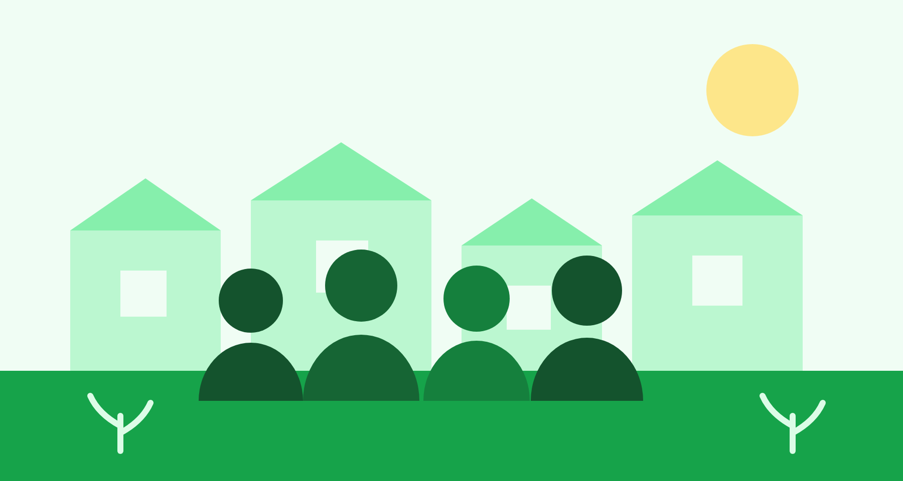

Missão
Ampliar o acesso à educação de qualidade e à renda digna em territórios historicamente negligenciados.
 Instituto Semear
Instituto Semear
O Instituto Semear atua desde 2014 em comunidades de baixa renda com programas de educação, segurança alimentar e geração de renda. Cada ação nasce da escuta do território e é executada junto com quem vive nele.
Somos uma organização da sociedade civil sem fins lucrativos, mantida por doações de pessoas físicas, empresas parceiras e editais públicos. Nossa equipe reúne educadores, assistentes sociais e mais de 180 voluntários ativos.

Ampliar o acesso à educação de qualidade e à renda digna em territórios historicamente negligenciados.
Ser referência nacional em metodologias comunitárias replicáveis e de baixo custo operacional.
Transparência na prestação de contas, protagonismo local, laicidade e não discriminação.
Dados auditados e publicados no relatório anual de atividades.
Acompanhamento pedagógico no contraturno para estudantes do ensino fundamental, com foco em alfabetização e matemática básica.
Turmas de até 12 alunos, três encontros semanais, em espaços cedidos por associações de moradores.
Distribuição de cestas e hortas comunitárias mantidas pelas próprias famílias atendidas.
Cadastro socioeconômico, entrega quinzenal e oficinas mensais de aproveitamento integral de alimentos.
Formação técnica curta e apoio à formalização de pequenos empreendedores do território.
Trilhas de 40 horas em costura, panificação e serviços digitais, seguidas de mentoria por seis meses.